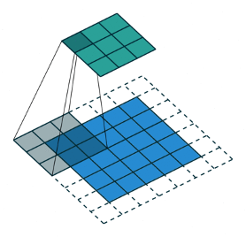

Page
Evelyn Basham - Plant Disease Recognition With Neural Networks
Preparation
Read: How the brain recognizes objects Watch: Guidelines for Diagnosing Plant Problems After watching the video, jot down a few features of plant diseases (i.e. shape, texture, etc.) that are important to their classification in your notebook.Overview
As agriculture continues to develop into a global enterprise, so too does the spread of diseases and pests that affect plants everywhere. Unfortunately, it takes a rather trained eye to identify the particular kind of affliction a plant may experience. Even then, new diseases may arise that escape identification in that particular region. Experts in the field have identified artificial neural networks (ANNs) as capable identifiers of plant disease and pest problems. However, this begs the question we might ask of all NNs in comparison with the human capacity to complete the same task: what features enable NNs to execute an exercise that would require years of visual training in humans? Please ponder this question as you read Sladojevic et al., authors who present another type of NN for plant disease identification using deep convolutional neural networks (CNNs or ConvNets ). ConvNets are often used in the field for analyzing visual imagery:“The architecture of a ConvNet is analogous to that of the connectivity pattern of Neurons in the Human Brain and was inspired by the organization of the Visual Cortex. Individual neurons respond to stimuli only in a restricted region of the visual field known as the Receptive Field. A collection of such fields overlap to cover the entire visual area” (Saha).As you may know, pictures are treated computationally as a matrix of pixels. However, other types of neural networks, such as ANNs, do a poor job of converting those matrices into usable information. ConvNets are better at consolidating such dense information without losing the important features of the picture (Saha)! They’re better because they are able to:
“...extract the high-level features such as edges, from the input image...Conventionally, the first ConvLayer is responsible for capturing the Low-Level features such as edges, color, gradient orientation, etc. With added layers, the architecture adapts to the High-Level features as well, giving us a network which has the wholesome understanding of images in the dataset, similar to how we would” (Saha).See the picture below demonstrating the extraction of only the most important pixel data from the larger, original image.

Sladojevic et al. reveal that:“The main goal for the future work will be developing a complete system consisting of server side components containing a trained model and application for smart mobile devices with features such as displaying recognized diseases in fruits, vegetables, and other plants, based on leaf images captured by the mobile phone camera. This application will serve as an aid to farmers (regardless of the level of experience), enabling fast and efficient recognition of plant diseases and facilitating the decision-making process when it comes to the use of chemical pesticides.”